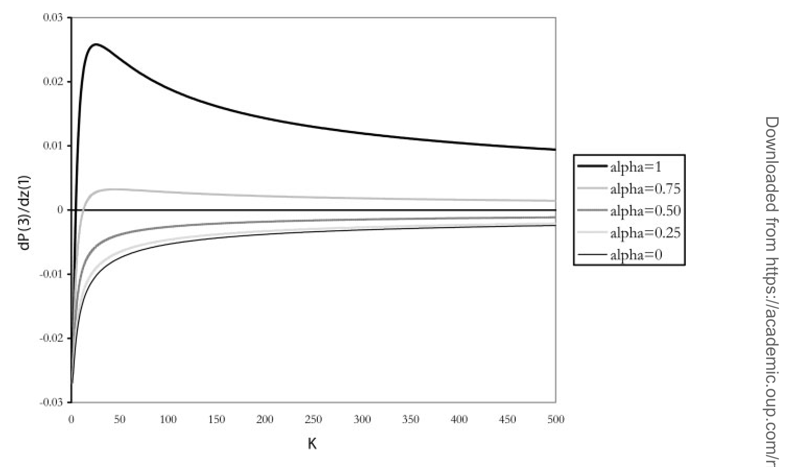
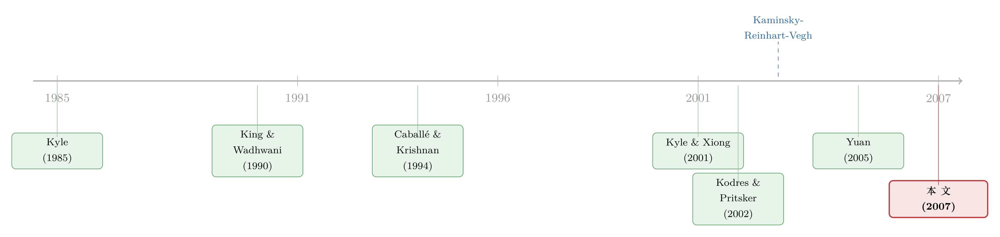

传染，不必经由「关系」——当做市商替你猜错了消息的来源
本文读的是 Pasquariello (2007, Review of Financial Studies)：作者把文献里解释金融传染的三条「财务联系」渠道——相关信息、相关流动性、组合再平衡——在模型里逐一用假设关掉，然后证明：只要知情交易者掌握的是异质的私有信息，并据此跨市场策略性下单，传染依然会作为均衡出现。机制不在投机者一端，而在做市商一端：他们对订单流来源的错误推断（cross-inference），把一国的本地冲击「传」给了一个与之毫无基本面关系的他国。
1 一个让人不安的事实
先从一个反复出现、却一直没被讲清楚的现象说起。
1982 年和 1994 年的墨西哥、1997 年的泰国、1998 年的俄罗斯、1999 年的巴西——这些危机几乎都以一国的「本地」动荡开场，可它们最终却溢出到了与初始冲击几乎没有任何经济联系的市场。更一般地，大量经验证据告诉我们：无论市场平静还是动荡，资产价格的「过度同向波动（excess comovement）」都是一个普遍特征。于是 金融传染 (financial contagion)——也就是一个冲击从某只证券或某个市场，传播到与它基本面上毫不相干的证券或市场——成了资产定价里最耐人寻味的谜题之一。
谜在哪？谜在「基本面不相干」这五个字。如果泰国和巴西的资产价值本来就由同一组因子驱动，那它们一起跌，根本不叫传染，叫共同基本面。真正令人不安的，是那些「按理说不该一起动」的市场，偏偏一起动了。
文献当然没闲着。Kaminsky、Reinhart 和 Vegh（2003）把这一摊子理论梳理过一遍，大体能分成两支：一支讲实体联系（贸易、国际经济周期），另一支讲财务联系。实体联系那一支的麻烦在于，它很难解释为什么危机会在东亚、东欧、拉美这些至多只有微弱关联的区域之间蔓延；它更解释不了为什么 2001 年土耳其和阿根廷的货币贬值，明明有显著的区域实体联系，却没有波及邻国——作者把这种情形借 Kaminsky 等人的话叫做「从未发生的传染」。
于是注意力转向了财务联系这一支。可这一支自己也有三块心病。
2 三个被「关掉」的旧渠道
要欣赏这篇论文的巧思，得先认识它打算「拆掉」的三件旧家具。财务联系的解释，按生成过度同向波动的机制，恰好可以分成三类：
第一，相关信息渠道（correlated information channel）。 最早由 King 和 Wadhwani（1990）提出：信息不对称会让不知情交易者在面对单一资产的特异冲击时，错误地更新对许多资产收益的信念。听上去很顺，但它有个硬伤——要么要求这些资产的终端收益本来就相关（那就不是「不相干」了），要么要求关于它们的信号彼此相关、哪怕收益不相关（那就等于给信息生成过程强加了一点「非理性」）。
第二，组合再平衡渠道（portfolio rebalancing channel）。 Fleming、Kirby 和 Ostdiek（1998）以及 Kodres 和 Pritsker（2002）指出：私有信息、价格接受型的投资者出于风险厌恶做组合再平衡，会误导其他不知情投资者的更新过程，从而诱发传染。可问题是，均值—方差式的组合选择，未必描述得了成熟投资者——尤其是新兴市场里那些大玩家——的真实决策。
第三，相关流动性渠道（correlated liquidity channel）。 Calvo（1999）、Kyle 和 Xiong（2001）、Yuan（2005）探讨了知情者受财务约束时，流动性冲击如何在均衡价格间传播。这条渠道在解释 LTCM 崩盘这类事件时相当有说服力，但它忽略了一点：被流动性冲击击中的人，往往优先卖掉高流动性资产（比如发达市场的资产），而不是手里那点新兴市场头寸。
读到这里，一个自然的问题是：这三条渠道，是不是金融传染绕不开的前提？换句话说——如果我把它们全都堵死，传染还能发生吗？
这正是作者要回答的问题，也是全文最漂亮的设计。他建一个模型，用构造逐条关掉这三条渠道：
- 给投机者关于本地因子 \(u\) 与共同因子 \(\vartheta\) 的分开的信号，使他们能正确区分冲击的来源——关掉相关信息渠道；
- 假设投机者风险中性——关掉组合再平衡渠道；
- 假设投机者不受借贷、卖空、财富约束，且各资产的噪声交易相互独立——关掉相关流动性渠道。
在这样一个「三门紧闭」的房间里，作者证明：只要投机者拿到的是异质的私有信息并据此策略性交易，过度同向波动仍然可以是均衡结果。这就是全文的主结论，也是它最重要的经验含义。
3 模型：把传染逼到「信息异质」这一个变量上
这是一篇典型的微观结构理论论文，模型建立在 Kyle（1985）与 Caballé 和 Krishnan（1994）之上：三期、两阶段，\(N\) 个风险资产加一个无风险计价物。交易只在第一期末（\(t=1\)）发生，资产收益在第二期末（\(t=2\)）实现。
3.1 基本面：把「相关」与「不相关」写进一个因子结构
收益向量 \(v\) 服从一个线性因子结构：
$$ v = u + \Theta\vartheta $$
其中 \(u\) 是 \(N\times 1\) 的特异冲击向量，\(\vartheta\) 是 \(F\times 1\) 的系统性风险向量，\(\Theta\) 是 \(N\times F\) 的因子载荷矩阵。\(u\) 与 \(\vartheta\) 都服从多元正态、互相独立，协方差阵 \(\Sigma_u\)、\(\Sigma_\vartheta\) 对角且非奇异。于是 \(\Sigma_v = \Sigma_u + \Theta\Sigma_\vartheta\Theta'\) 既非对角也非奇异——是否「相关」，完全由载荷 \(\Theta\) 说了算。
接着，作者沿用 Kodres 和 Pritsker（2002）的思路，给出一个三国例子。把每个风险资产解读成一国的综合市场指数：
$$ \begin{aligned} v(1) &= u(1) + \vartheta(1)\\ v(2) &= u(2) + 0.5\,\vartheta(1) + 0.5\,\vartheta(2)\\ v(3) &= u(3) + \vartheta(2) \end{aligned} $$
这是全文的「沙盘」，务必看懂：两个「外围」国家 1 和 3，彼此基本面无关（\(\mathrm{cov}[v(1), v(3)] = 0\)，因为它们不共享任何系统性因子），但都通过 \(\vartheta(1)\)、\(\vartheta(2)\) 与「核心」国家 2 相连。国家 2 基本面方差最低、同时暴露于两个共同因子，可以想成一个发达、全球化的市场；国家 1 和 3 则是两个互不相干的新兴市场。本文的全部目标，就是描述一种新机制，让国家 1 的冲击，能传到与它毫无基本面关系的国家 3 的价格上。
3.2 信息：让投机者「猜对」，把出错的机会留给做市商
市场里有三类风险中性的参与者：完全竞争的做市商（market makers, MMs）、\(K\) 个知情且不完全竞争的投机者、以及流动性交易者。风险中性这一刀，已经把组合再平衡渠道砍掉了。
在 \(t=0\) 与 \(t=1\) 之间，每个投机者 \(k\) 收到两组带噪私有信号：关于本地因子的 \(S_{uk} = u + \varepsilon_{uk}\)，和关于共同因子的 \(S_{\vartheta k} = \vartheta + \varepsilon_{\vartheta k}\)。注意这是「两组」而非「一组」——正是这一点关掉了相关信息渠道。由贝叶斯更新，投机者在交易前对 \(v\) 的期望是：
其中 \(\Sigma_{Su} = \Sigma_u + \Sigma_{\varepsilon u}\)、\(\Sigma_{S\vartheta} = \Sigma_\vartheta + \Sigma_{\varepsilon\vartheta}\)。这条式子的关键含义是：因为本地与共同信号是分开给的，投机者对「冲击究竟是本地的还是全局的」做出的判断，与底层经济结构是一致的——他不会犯相关信息渠道里那种错误。
作者用一个反事实把这点量化得很干净。假如换一种设定，只给投机者一组合并信号 \(S_{vk} = S_{uk} + \Theta S_{\vartheta k}\)，那么他会错误地在指数 1 和 3 之间推断出同向波动：\(\partial E_k[v(1)]/\partial v(3) = -0.019\)，尽管 \(\mathrm{cov}[v(1), v(3)] = 0\)。而在本文「分开信号」的设定下，\(\partial E_k[v(1)]/\partial u(3) = 0\) 且 \(\partial E_k[v(1)]/\partial\vartheta(3) = 0\)——投机者的推断是正确的。
这一步是全文的「设计眼」：作者刻意让投机者不犯错，从而把后面所有传染的「锅」，都甩给唯一还可能犯错的那一方——做市商。
3.3 优势、异质与策略
定义投机者 \(k\) 的信息优势为 \(\delta_k = E_k(v) - v\)，其方差为
$$ \mathrm{var}(\delta_k) \equiv \Sigma_\delta = \Sigma_u\Sigma_{Su}^{-1}\Sigma_u + \Theta\,\Sigma_\vartheta\Sigma_{S\vartheta}^{-1}\Sigma_\vartheta\,\Theta' $$
而任意两个投机者优势之间的协方差为
$$ \mathrm{cov}(\delta_k, \delta_i) \equiv \Sigma_c = \Sigma_u\Sigma_{Su}^{-1}\Sigma_u\Sigma_{Su}^{-1}\Sigma_u + \Theta\,\Sigma_\vartheta\Sigma_{S\vartheta}^{-1}\Sigma_\vartheta\Sigma_{S\vartheta}^{-1}\Sigma_\vartheta\,\Theta' $$
这两个矩阵的关系，是全文唯一真正要紧的「旋钮」。作者据此给出定义：当 \(\Sigma_c = \gamma\Sigma_\delta\)（\(\gamma\in(0,1)\)）时，称投机者信息同质（information homogeneity）——大家的私有信息相同或高度相似；当 \(\Sigma_c \neq \gamma\Sigma_\delta\) 时，称信息异质（information heterogeneity）——每个人的优势里，都有一部分只有他自己知道。这种异质，可以理解成投机者使用了不同的渠道去了解影响 \(v\) 的因子；它在大多数金融市场、尤其是新兴市场里普遍存在，因为那里信息的生成与获取远没有发达经济体那样标准化。
投机者是不完全竞争的：他们正确预期定价规则，并据此构造自己的订单（如 Kyle 1989）。每个人持有 \(NAV_{0k}\) 单位无风险资产，其最优需求 \(X_k\) 最大化第二期末组合净值的效用：
$$ U_k = U(NAV_{2k}) = NAV_{0k} + X_k'(v - P_1) $$
而做市商面对的是一个基于数量的信号提取问题：他们只观察到所有资产的总订单流 \(\omega_1 = \sum_{i=1}^{K} X_i + z\)（\(z\) 是独立、对角协方差的流动性需求），然后据此设定满足半强式有效的出清价格：
$$ P_1(\omega_1) = E(v \mid \omega_1) $$
均衡是线性的（Kyle 1985；Caballé 和 Krishnan 1994）：投机者的策略 \(X_k\) 是其优势 \(\delta_k\) 的线性函数，价格 \(P_1\) 是总订单流的线性函数。请特别留意——\(P_1\) 是个向量，而把订单流映射到价格的那个矩阵带有非零的非对角元。换句话说，做市商会用对一国资产的需求，去推断另一国资产的终端收益。作者给这个学习活动起了个名字：交叉推断（cross-inference）。
整篇论文的传染，就发生在这个非对角元上。（关于一只资产的冲击如何经由做市商的「一本账」改写另一只资产的报价，可参见《做市商的「一本账」：当一只股票的冲击，悄悄改写了另一只的报价》。）
4 反转：同样的卖单，做市商为什么会猜错
现在把沙盘摆好，让冲击落下，看故事怎么走。
假设投机者收到私有信息：泰国（国家 1）将遭遇一个负的特异冲击——比如货币政策立场突变。一个风险中性、又想最大化利润的投机者，会怎么做？
最朴素的做法是：只卖泰国资产。但这样做会泄露他的信息优势——大举、且只在泰国砸盘，等于把「我知道泰国要出事」写在脸上，做市商一看订单流就明白了，价格瞬间下调，他的预期利润随之蒸发。
于是真正关键的一步出现了：在做市商会做交叉推断的前提下，投机者选择谨慎而策略性地跨市场交易，而不是孤注一掷地只砸泰国。具体到这个例子——他不只卖泰国，还会买德国（国家 2）、卖巴西（国家 3）。为什么是这个组合？因为「卖泰国—买核心—卖另一个外围」这套动作，看上去恰好像是新的系统性信息驱动的（想想载荷结构：核心国 2 同时暴露于 \(\vartheta(1)\) 和 \(\vartheta(2)\)），而不像一个孤立的本地利空。投机者就是要用这套伪装，引导做市商往「系统性消息」上想，从而减弱泰国价格本该有的那一记下挫。
到这里，胜负就压在做市商的「辨识力」上了。
情形一：信息同质。 当投机者们掌握的私有信息相同或高度相似时，他们会为了抢夺信息租金而更激进地竞争。激烈竞争让总订单流变得足够「透明」，做市商能从中学到：眼前这套「卖泰国、买德国、卖巴西」的跨市场交易，其实只是对泰国一国的负面特异冲击。于是均衡里，只有泰国价格下跌，德国和巴西纹丝不动——没有传染。
情形二：信息异质。 私有信号的异质，会诱使每个投机者转向更谨慎、近乎准垄断的行为——既然优势里有一块只有自己知道，他就没必要替别人「打价格战」。竞争一弱，总订单流的信息含量随之下降，做市商学不准每个人的信号与交易。于是那套跨市场动作，被他误读成了系统性消息。错误的交叉推断一旦发生，传染就在均衡里出现了：泰国价格下跌、德国价格上涨，而更耐人寻味的是，巴西价格也跟着下跌——尽管泰国和巴西在基本面上毫无关系。
这就是全文的核心反转，也值得反复咀嚼：传染并非源于投机者的错误（我们前面特意让他猜对了），而是源于做市商的错误推断；而做市商之所以会错，恰恰是因为投机者的信息异质到了让订单流「失真」的程度。换句话说，是异质信息下投机者的策略性伪装 + 做市商的交叉推断，两者合谋，把一个本地冲击送过了基本面的「隔离带」。
（这种「越是不完全竞争、越愿意藏着掖着」的策略逻辑，与 Kyle 框架下知情者如何处置自己的信息一脉相承，可参见《谁把信息让给了对手？——一个 Kyle 模型里「越无知越愿意分享」的反转》；而分歧/异质如何让订单流更「值得倾听」，则可对照《订单流里的「悄悄话」：当分歧越大，债市越听它说话》。）
5 谁更脆弱：把传染强度接回经济的「可观测量」
主结论之外，作者进一步把均衡的过度同向波动，接回底层经济的几个基本属性，给出可检验的比较静态。
下面这张图，正是用三国经济做的数值演示：它刻画了在噪声交易冲击下，传染随关键参数变化的强度。

Figure 4: plots a measure of contagion from noise-trading shocks in the three-country economy of
几条结论值得记下：
- 信息异质的强度越高、成熟投资者的参与越多，一个市场内部就会引发越多的错误推断，从而对外部特异冲击越脆弱。这恰好能解释 Kaminsky 等人（2003）报告的那个「程式化观察」：打击大国或小国的金融危机，常常没有国际余波，只是偶尔才会迅猛地席卷全球。
- 经济联系越紧密的区域与市场内部及彼此之间，过度同向波动越可能发生、幅度也越大——因为更紧的联系，会诱发做市商更多（也可能更错）的交叉推断。反过来，作者也证明：在所有经济体都自给自足（autarkic）那种不太现实的设定里，传染不会发生。这与「自给自足的经济很少经历传染效应」这一经验观察一致。
至于经验支撑，作者引用了 Kallberg 和 Pasquariello（2004）：在控制了市场波动率之后，美国股市内部相当一部分过度同向波动，可以由分析师盈利预测的离散度（Diether、Malloy 和 Scherbina 2002 建议的、信息异质性的代理变量）来解释。需要诚实地讲——本文本身是纯理论，它提供的是机制与可检验含义，真正的实证检验留给了别处。
把这些政策含义连起来看，作者的指向很清楚：经济金融一体化叠加成熟交易者之间持续的、不对称的信息共享，可能正是新兴市场金融传染更频繁、更剧烈的原因；因而，为公司与宏观信息的披露建立严格而统一的规则，或许能增强这些市场抵御乃至避免国际溢出的能力。
6 文献脉络
把这条线索拎出来看，会发现它是两股传统的合流。
一股是金融传染的理论谱系。King 和 Wadhwani（1990）用相关信息渠道开了头；Fleming、Kirby 和 Ostdiek（1998）与 Kodres 和 Pritsker（2002）把组合再平衡渠道做扎实；Calvo（1999）、Kyle 和 Xiong（2001）、Yuan（2005）则沿相关流动性渠道推进。Kaminsky、Reinhart 和 Vegh（2003）把这一切总结为传染的「不圣三位一体」。
另一股是多资产策略交易的微观结构传统。源头是 Kyle（1985）的连续拍卖与内幕交易模型，以及 Admati（1985）的多资产噪声理性预期；Caballé 和 Krishnan（1994）把不完全竞争搬进多证券市场，给了本文最直接的技术骨架。

本文（Pasquariello 2007）的位置，正卡在这两股传统的交点上：它借用 Kyle–Caballé–Krishnan 的策略交易机器，去回答传染文献的问题，并以「把三条旧渠道全关掉」的方式，腾出一个全新的第四条渠道——异质信息 + 交叉推断。它的伴生实证（Kallberg & Pasquariello 2004）则把这条机制接回了可观测的「分析师分歧」。
7 评论与延伸（Q&A + 研究方向）
(a) 几个可能的疑问
Q：这和老的「相关信息渠道」到底有什么不一样？不都是靠信息出错吗？
不一样，而且差别正是本文的命门。King–Wadhwani 的相关信息渠道，要求信号或收益本身相关，是「投机者/不知情者」对收益做了错误外推。本文里投机者拿到分开的信号、推断完全正确（\(\partial E_k[v(1)]/\partial\vartheta(3)=0\)），出错的是做市商对订单流来源的交叉推断。错误的位置从「信息接收端」挪到了「价格制定端」，这才让它能在基本面与信号都不相关的设定下产生传染。
Q：把三条渠道全关掉，会不会关得太狠，模型已经不像真实市场了？
这是一把双刃剑。好处是识别极其干净：传染一旦出现，就只能归因于「异质信息 + 不完全竞争 + 交叉推断」，没有别的嫌疑人。代价是外部效度——现实里风险厌恶、卖空约束、相关流动性同时存在，本文的机制是它们之上的增量，而非替代。把它读成「即使没有那三条，传染照样能发生」最稳妥。
Q：为什么信息「异质」反而比「同质」更危险？直觉上信息多不是更好吗？
关键在竞争强度。同质信息下，投机者为抢同一份租金而激烈竞争，反而把订单流「喊」得很清楚，做市商学得准、不会错判。异质信息下，每人都握着一块独占优势，行为趋于准垄断、谨慎，订单流信息含量下降，做市商被迫在迷雾里下注——于是猜错、于是传染。是「竞争弱化」而非「信息变少」在起作用。
Q：为什么传染要靠「核心市场」做跳板？两个外围直接传不行吗？
因为外围 1 和 3 之间 \(\mathrm{cov}[v(1),v(3)]=0\)，没有任何共享因子可供做市商「借道」。投机者的伪装之所以奏效，恰恰是利用了核心国 2 同时暴露于 \(\vartheta(1)\)、\(\vartheta(2)\) 的载荷结构——「卖外围、买核心」看起来像系统性消息。作者也证明：全自给自足（无核心、无联系）时，传染消失。所以「金融中心」在本文里不是背景板，而是传导的必要管道。
Q：投机者风险中性，为什么还要费劲跨市场伪装、而不直接砸盘套利？
因为他们是不完全竞争而非价格接受者：价格会对他们的交易做出反应。只在泰国砸盘会自我泄露、压低成交价、吃掉利润。跨市场策略性下单是为了最小化信息耗散，把价格冲击摊薄。这是 Kyle（1989）式策略交易的直接后果，与风险偏好无关。
Q：本文是纯理论，凭什么说它「解释了」新兴市场的脆弱？
严格说它给的是可检验含义而非直接证据。它预测：信息异质性越强、成熟投资者参与越多、经济联系越紧，市场对外部特异冲击越脆弱。Kallberg–Pasquariello（2004）用分析师预测离散度对美股过度同向波动做了印证，但跨国、尤其是新兴市场层面的直接检验，本文并未提供——这正是它留下的空白。
(b) 几个可能的研究问题与提案
1. 把「交叉推断」搬到公司债市场。 【经济故事】公司债做市高度依赖交易商，且同一发行人、同一行业的债券之间存在天然的「载荷」结构。一只债券的大额卖单，会不会经由交易商的交叉推断，压低基本面不相关的另一只债券？这正是本文机制在 OTC 市场的镜像。 【可行性】中。TRACE 提供逐笔成交与交易商身份，分析师/卖方分歧可作信息异质代理。难点在于把「交叉推断」与真实的信用联系、共同持有人剥离干净，需要精心设计的安慰剂（同发行人不同券、同评级不同行业）。
2. 用分析师预测离散度，做跨国版的传染检验。 【经济故事】本文预测「信息异质强度 → 脆弱性」。能否在一个跨国指数面板上，用各国分析师盈利预测的离散度，预测该国在外部特异冲击下被传染的幅度？ 【可行性】中。I/B/E/S 跨国预测数据 + Datastream 指数收益可得，识别可借危机事件（泰国 1997、俄罗斯 1998）做事件研究。挑战是离散度同时混入了基本面不确定性，需要与波动率正交化（本文实证范式正是如此）。
3. 外资持有人结构与「成熟投资者参与度」。 【经济故事】本文说成熟投资者参与越多、错误推断越多、市场越脆弱。外资机构持股比例是「成熟参与」的天然代理——外资占比高的新兴市场，是否在全球冲击下表现出更强的过度同向波动？ 【可行性】中高。多数新兴市场有外资持股的季度/月度披露，EPFR 提供资金流。识别可借「可投资度（investability）」的外生调整做断点/DiD。需小心外资占比与市场开放度、流动性的内生纠缠。
4. 做市商「单账本」下的跨资产价格冲击实测。 【经济故事】本文的传染寄生在定价矩阵的非对角元上。在做市商集中、可识别的市场里，能否直接估计「对资产 A 的订单流冲击 → 资产 B 的价格反应」这个交叉项，并验证它随信息异质性放大？ 【可行性】中。需要带交易商标识的逐笔数据（部分外汇、国债、公司债平台可得）。难在把交叉价格冲击与共同基本面、共同库存约束分离，识别强度取决于能否找到只动一边、不动另一边的外生订单流。
我的判断
这篇论文的贡献，不在于它「发现」了一条新渠道，而在于它证明了一条新渠道的存在性是干净的——把文献公认的三大嫌疑人全部锁进笼子之后，传染依然走得出来，凶手是「异质信息 + 不完全竞争 + 做市商交叉推断」。这种「用构造做排除法」的论证，比再添一个能解释数据的模型更有说服力，因为它回答的是一个反事实问题：传染非得靠那三条吗？答案是不必。
但要诚实指出它的边界。其一，它是纯理论加数值算例，三国沙盘和载荷 $0.5/0.5$ 都是为了讲清机制而选的参数，主结论的「符号」（泰国跌、德国涨、巴西跌）是数值演示而非估计量级——读者拿不到一个可以直接对账的传染弹性。其二，机制的可观测性偏弱：「信息异质」和「交叉推断」都不是能直接看见的变量，实证只能退而求其次用分析师分歧之类的代理，而这些代理同时背着基本面不确定性的「行李」。其三，把三条渠道关掉有助识别、却折损外部效度——现实中传染多半是四条渠道叠加，本文给的是增量而非全景。
我接下来最想看到的，是把这套「交叉推断」机制搬进一个能识别的实证场景：带交易商标识的微观数据、外生的单边订单流冲击、以及一个能把信息异质性与共同基本面/共同库存切开的设计。如果能在公司债或新兴市场股指上，直接量出「定价矩阵非对角元随信息异质放大」，这篇 2007 年的理论，才算真正落了地。
参考文献
Admati, A. (1985). A Noisy Rational Expectations Equilibrium for Multi-Asset Securities Markets. Econometrica 53(3), 629–657.
Caballé, J., & Krishnan, M. (1994). Imperfect Competition in a Multi-Security Market with Risk Neutrality. Econometrica 62(3), 695–704.
Calvo, G. (1999). Contagion in Emerging Markets: When Wall Street is a Carrier. Working Paper, University of Maryland.
Diether, K., Malloy, C., & Scherbina, A. (2002). Differences of Opinion and the Cross Section of Stock Returns. Journal of Finance 57(5), 2113–2141.
Fleming, J., Kirby, C., & Ostdiek, B. (1998). Information and Volatility Linkages in the Stock, Bond, and Money Markets. Journal of Financial Economics 49(1), 111–137.
Kaminsky, G., Reinhart, C., & Vegh, C. (2003). The Unholy Trinity of Financial Contagion. Journal of Economic Perspectives 17(4), 51–74.
King, M., & Wadhwani, S. (1990). Transmission of Volatility Between Stock Markets. Review of Financial Studies 3(1), 5–33.
Kodres, L., & Pritsker, M. (2002). A Rational Expectations Model of Financial Contagion. Journal of Finance 57(2), 769–799.
Kyle, A. (1985). Continuous Auctions and Insider Trading. Econometrica 53(6), 1315–1335.
Kyle, A. (1989). Informed Speculation with Imperfect Competition. Review of Economic Studies 56(3), 317–355.
Kyle, A., & Xiong, W. (2001). Contagion as a Wealth Effect. Journal of Finance 56(4), 1401–1440.
Pasquariello, P. (2007). Imperfect Competition, Information Heterogeneity, and Financial Contagion. Review of Financial Studies 20(2), 391–426.